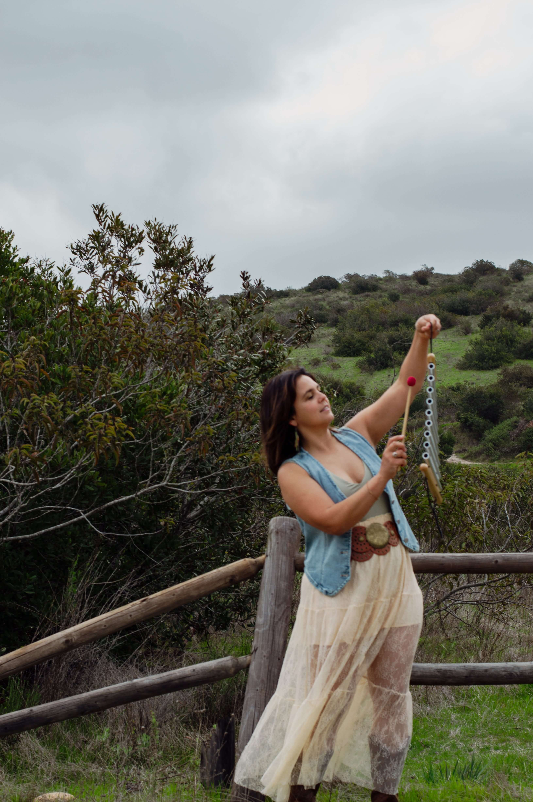

CHRISTINA HEALING ARTS
Meet Your Facilitators
Christina and Abigail bring complementary experience, care, and intention to the spaces they facilitate together. Their shared approach is rooted in connection, choice, nervous-system support, and creating room for each person to meet themselves where they are.

FACILITATOR
Christina Phares
Somatic Wellness & Mind-Body Facilitator
Born and raised in San Diego, Christina was first introduced to yoga while teaching English as a Second Language in South Korea. It was there that she began to more deeply understand the connection between mind and body.
After returning to the United States, Christina completed her 200-Hour Yoga Alliance Approved Teacher Training and continued expanding her work through trauma-informed yoga, somatics, adaptive yoga, Yin Yoga, breathwork, meditation, and Reiki.
Her years working in yoga studio management eventually led her toward creating a practice centered on her own vision: offering tools for introspection and empowering people to take an active role in their wellbeing.
Christina approaches her work as a supportive guide, creating space for exploration, curiosity, movement, and self-trust.
FACILITATOR
Abigail Berard
Trauma-Informed Wellness Facilitator
Abigail brings a compassionate, trauma-informed perspective to the spaces she facilitates, with an emphasis on emotional wellbeing, grounding, and nervous-system support.
Her work creates opportunities for reflection, connection, restorative care, and moments of stillness that allow people to reconnect with what they need.
Abigail also brings Reiki into her work, offering another layer of support within experiences designed to help participants slow down, soften, and feel more present.
Her approach centers choice and personal agency, creating space where participation, rest, curiosity, and simply being are all equally welcome.